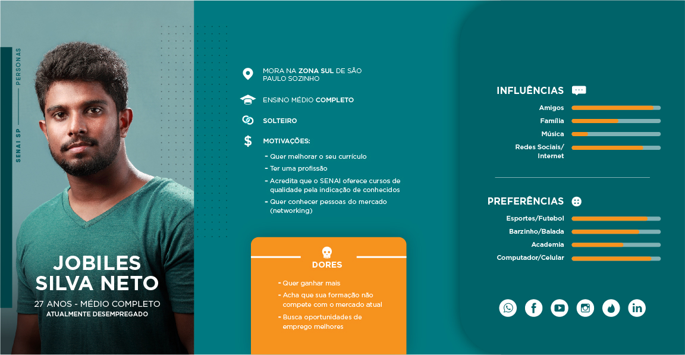
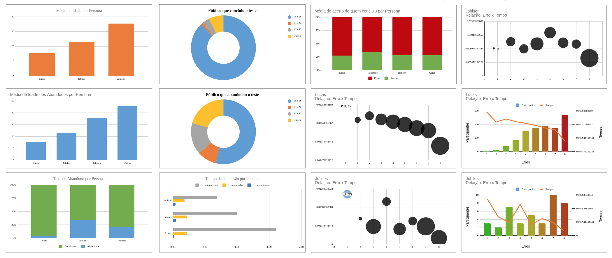
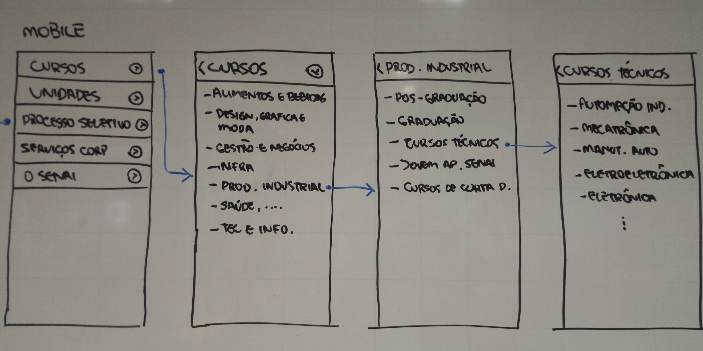
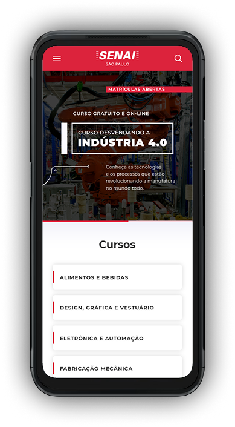
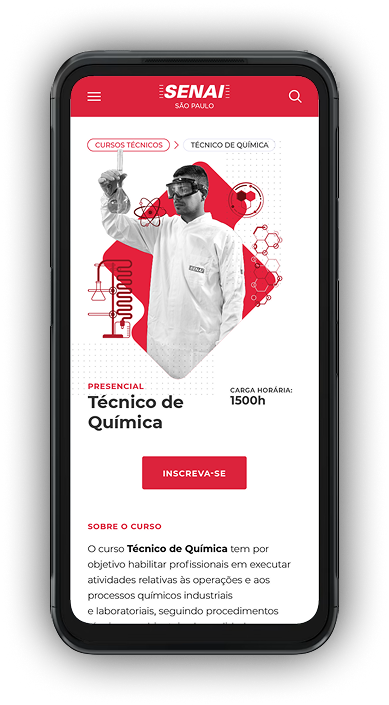
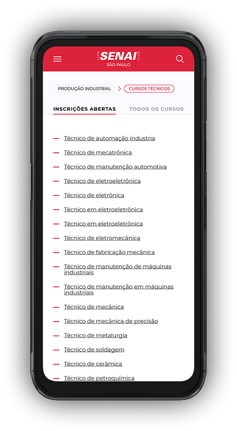
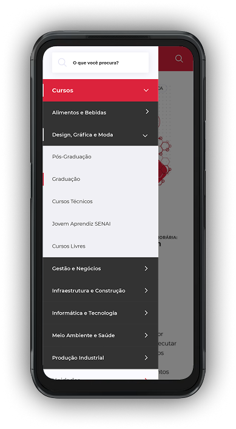

Desafio
A estrutura de navegação e a organização dos cursos dificultavam a localização das formações disponíveis, aumentando o esforço dos usuários e tornando a jornada de escolha menos intuitiva.
Redesign Site Institucional
Redesenho da jornada do aluno para a inscrição em cursos de curta, média e longa duração. Restruturação da grade de cursos e redesign do site institucional.
Resumo executivo
O projeto teve como objetivo redesenhar o site institucional do SENAI-SP e facilitar a descoberta de cursos por diferentes perfis de usuários. A partir de entrevistas, criação de personas, reorganização da arquitetura da informação e testes com usuários, estruturamos uma nova experiência de navegação, mais clara e orientada às necessidades de alunos e potenciais alunos.
A estrutura de navegação e a organização dos cursos dificultavam a localização das formações disponíveis, aumentando o esforço dos usuários e tornando a jornada de escolha menos intuitiva.
Reorganização da grade de cursos, evolução da arquitetura da informação e redesign das principais jornadas do site institucional, com foco na experiência mobile.
Maior facilidade para encontrar cursos, redução de erros durante a navegação e uma experiência mais clara para apoiar a decisão dos futuros alunos.
Discovery, entrevistas com usuários, criação de personas, Tree Testing, wireframes, prototipação e redesign das interfaces.
Metodologia
O projeto foi conduzido por meio de uma abordagem centrada no usuário, combinando pesquisa qualitativa, arquitetura da informação, testes de navegação e prototipação. Os aprendizados obtidos em cada etapa orientaram a reorganização dos conteúdos e o desenvolvimento das novas interfaces.
Conversas com alunos e potenciais alunos para compreender objetivos, comportamentos, dificuldades e critérios utilizados na escolha de cursos.
Consolidação dos padrões identificados nas pesquisas em perfis representativos do público do SENAI-SP.
Reorganização das categorias e da grade de cursos para tornar a navegação mais simples e coerente.
Validação da nova taxonomia por meio de tarefas de localização de cursos realizadas por usuários dentro do perfil esperado.
Criação dos fluxos e wireframes das principais jornadas, incluindo menu, categorias, listas de cursos e páginas de detalhes.
Desenvolvimento das interfaces de alta fidelidade e aplicação da identidade visual do SENAI-SP na nova experiência digitals.
Números que importam
Período dedicado ao discovery, pesquisa, organização da informação, validação e desenvolvimento das interfaces.
Usuários envolvidos na validação da arquitetura da informação e na análise da encontrabilidade dos cursos.
Perfis construídos a partir de entrevistas com alunos e potenciais alunos do SENAI-SP.
As personas foram desenvolvidas a partir de entrevistas com alunos e potenciais alunos que representavam diferentes perfis do público do SENAI-SP. A pesquisa permitiu identificar objetivos, motivações, influências, preferências, dificuldades e critérios utilizados na escolha de uma formação, esses perfis orientaram decisões relacionadas à navegação, à organização dos cursos, à linguagem e à apresentação das informações.

Após a reorganização da taxonomia e das categorias do portal, realizamos um Tree Testing com usuários dentro do perfil do público do SENAI-SP. Os participantes receberam tarefas específicas e precisavam localizar determinados cursos utilizando apenas a nova estrutura de navegação. Os resultados foram comparados com a estrutura anterior para avaliar a encontrabilidade dos conteúdos, o tempo necessário para conclusão das tarefas, os caminhos escolhidos e os pontos de abandono.

Com a nova estrutura validada, foram desenvolvidos wireframes das principais páginas e fluxos do portal. O trabalho começou com representações de baixa fidelidade para explorar rapidamente diferentes formas de organizar o conteúdo, testar hierarquias e estruturar a navegação mobile.

As interfaces de alta fidelidade traduziram os aprendizados do discovery em uma experiência mobile mais clara, organizada e consistente. O redesign manteve a identidade visual do SENAI-SP e priorizou a navegação por cursos, a leitura das informações e o acesso às ações mais importantes.



